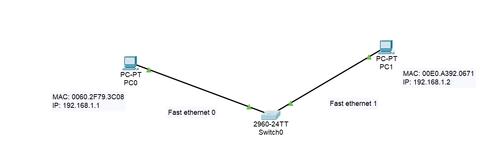
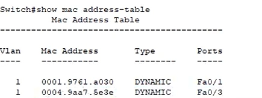
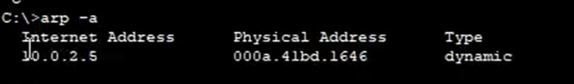

04 — Hub, switch e ARP
Commutazione Ethernet, MAC address table e risoluzione ARP
Sommario
Nota
Concetto Chiave:
Hub: Dispositivo di Livello 1 (Fisico) → Stupido (Ripetitore). Switch: Dispositivo di Livello 2 (Data-Link) → Intelligente (Usa i MAC Address).
1. Hub vs Switch
Hub (Obsoleto)
- Funzione: È un semplice ripetitore multiporta. Rigenera il segnale elettrico e lo invia a tutte le porte, tranne quella da cui è arrivato.
- Logica: Non ha memoria, non ha una MAC Address Table.
- Duplex: Opera in Half-Duplex (o trasmette o riceve, non entrambi contemporaneamente).
- Problema: Genera alto traffico inutile e collisioni (tutti ricevono tutto, anche se non destinato a loro).
Switch (Standard Attuale)
- Funzione: Invia i frame solo alla porta dove si trova il destinatario specifico.
- Logica: “Impara” quale dispositivo è collegato a quale porta e lo memorizza nella MAC Address Table.
- Duplex: Opera in Full-Duplex (invia e riceve contemporaneamente).
- Comando: Per vedere la tabella su apparati Cisco:
show mac address-table.

Supponiamo un ping tra questi due terminali su uno switch

Facendo un enable sull’interfaccia, posso vedere la Mac address Table dello switch, quindi le corrispondenze tra MAC address e porte fisiche (Ethernet)
MAC Address Table (Learning & Flooding)
- Iniziale (Tabella vuota): Lo switch riceve un frame. Non sa dove sia il destinatario, quindi lo manda a tutti (Flooding), comportandosi momentaneamente come un Hub.
- Apprendimento: Guarda il MAC Sorgente del pacchetto in arrivo e si segna: “Il dispositivo X è sulla porta 1”.
- A regime: Una volta compilata la tabella, invia i pacchetti solo alla porta specifica del destinatario (Forwarding).
2. Tipologie di Indirizzamento L2
Lo switch (e la scheda di rete) distingue il tipo di comunicazione leggendo il LSB (Least Significant Bit) del primo ottetto del MAC Address.
| Tipo | Destinatario | MAC Address | Esempio |
|---|---|---|---|
| Unicast | 1 a 1 | LSB = 0 | A parla solo con B. |
| Multicast | 1 a Molti | LSB = 1 | A parla con un gruppo specifico. |
| Broadcast | 1 a Tutti | Tutti F | FFFF.FFFF.FFFF (Tutti ascoltano). |
Approfondimento (Switch & MAC Table):
Youtube Link - Switch Logic & Packet Tracer
3. ARP (Address Resolution Protocol)
Nota
A cosa serve?
Noi usiamo indirizzi IP (Livello 3) per comunicare (es. Ping 192.168.1.5), ma gli switch e le schede di rete capiscono solo MAC Address (Livello 2). ARP è il traduttore: converte un IP noto in un MAC Address sconosciuto.
Funzionamento (Request & Reply)
Immagina di voler fare un Ping verso un IP, ma la tua ARP Cache è vuota.
- ARP Request (Chi è 192.168.1.5?):
- Il mittente non conosce il MAC del destinatario.
- Invia un pacchetto a indirizzo Broadcast (
FFFF.FFFF.FFFF). - Tutti ricevono la domanda.
- ARP Reply (Sono io!):
- Gli host che non hanno quell’IP ignorano il pacchetto.
- L’host che possiede l’IP risponde in Unicast (diretto al richiedente) comunicando il proprio MAC Address.
- Caching:
- Il mittente salva la coppia IP-MAC nella sua ARP Cache Table per non dover chiedere di nuovo in futuro.

comando arp -a
Comandi e Sicurezza
arp -a: Visualizza la tabella ARP corrente (Windows/Linux/Cisco).sudo arp -s: Aggiunge una voce statica manuale (utile per sicurezza).- Vulnerabilità: (ARP Spoofing/Poisoning): Un attaccante può inviare risposte ARP false, dicendo “L’IP del Router corrisponde al MIO MAC address”, intercettando tutto il traffico (Man In The Middle).
Approfondimento (ARP):